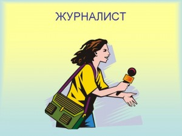

Набір професійних якостей
- Системне мислення
- Володіння кількома іноземними мовами
- Уміння знаходити спільну мову й працювати з колективом
- Уміння керувати складними автоматизованими комплексами
- Уміння керувати проектами і процесами
- Уміння ставити задачі собі самостійно
- Клієнтоорієнтованість
- Стресостійкість
- Креатив та естетичний смак

Джерело інформації
Галузі майбутнього